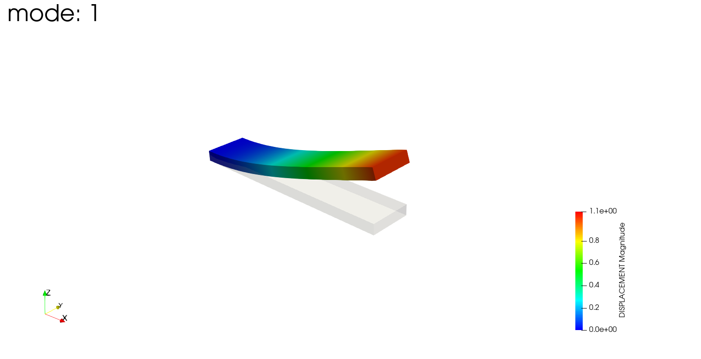
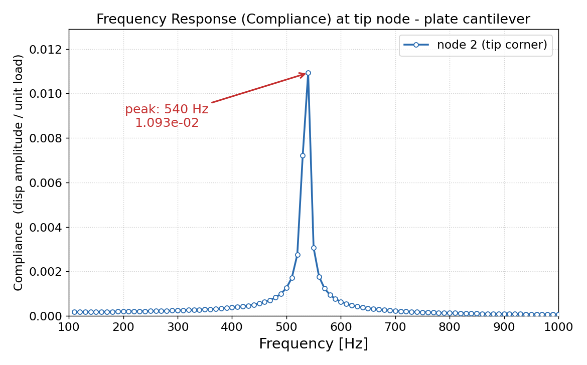
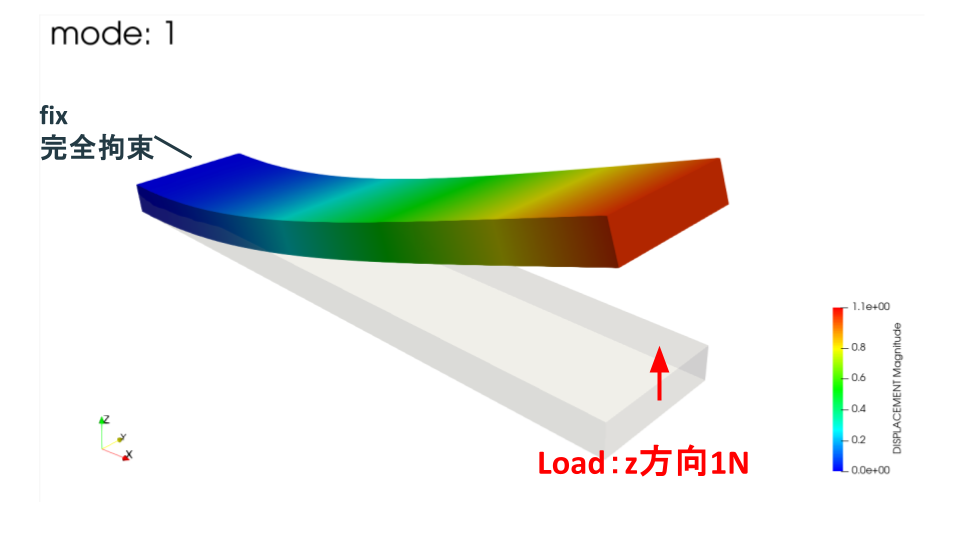

今回はFrontISTRで、前回求めた片持ち板の固有値解析結果を読み込んで、周波数応答解析を行った話です。
こんにちは（@t_kun_kamakiri）
前回は 001_eigen フォルダで片持ち板の固有値解析を行い、1次固有振動数が約536Hzになることを確認しました。今回はその結果を 002_freqResponse フォルダから読み込み、先端に周期荷重を与えたときの応答振幅を見ます。
今回の周波数応答解析は、次の条件で行いました。
前回の固有値解析では、1次モードがZ方向（板厚方向）の1次曲げで、その固有振動数は約536Hzでした。この1次モードの変形は次のような形です。

1次モード（Z方向の1次曲げ、約536Hz）。灰色が変形前、色付きが変形形状で、固定端から自由端に向かって板厚方向に大きく曲がります。
そこで今回は、その1次モードを狙って先端をZ方向に加振し、1次固有振動数の近くで応答（コンプライアンス）がどう大きくなるかを見ます。つまり、この記事のコンプライアンス波形は1次モード（Z方向曲げ）の共振を捉えたものです。
先に結果を示します。

先端をZ方向に加振し、100〜1000Hzを10Hz刻みで計算したコンプライアンス波形。540Hzで最大応答になり、1次モード（Z方向曲げ）の固有振動数536Hzの近くで共振していることが分かります。
今回のピークは 540Hz、振幅 1.093×10⁻² でした。固有値解析で得た1次固有振動数536Hz（Z方向の1次曲げ）にかなり近い位置で応答が大きくなっており、狙った1次モードの共振を捉えられています。
FrontISTR 5.9
WSL2環境に構築
今回の解析は2ステップです。
20260712_plateEigeResponse/
001_eigen/ ← Step1: 固有値解析
FistrModel.msh
FistrModel.cnt
hecmw_ctrl.dat
0.log ← 固有値・固有振動数
FistrModel.res.0.1...20 ← 固有ベクトル
002_freqResponse/ ← Step2: 周波数応答解析
FistrModel.cnt
FistrModel.msh ← 001からコピー（後述の方法2）
hecmw_ctrl.dat
0.log ← 周波数-応答振幅
docs/
compliance.csv
img/compliance.pngStep2の周波数応答解析では、Step1で作成した固有値解析の結果を入力として使います。固有値解析と周波数応答解析をフォルダで分けることで、どの結果を次の解析に渡しているかを追いやすくなります。
周波数応答解析では、固有値解析で得られたモード情報を使って、指定した周波数で構造がどれくらい応答するかを計算します。そのため、002側では次の3種類の情報を用意します。
メッシュは解析対象の形状と節点グループを決める情報です。固有値・固有振動数は、どの周波数で共振しやすいかを表します。固有ベクトルは、各モードでどの方向にどのように変形するかを表します。002の周波数応答解析は、この3つを組み合わせて計算します。
このうち固有値・固有振動数（0.log）と固有ベクトル（FistrModel.res）は、必ず001の固有値解析結果を読み込みます。../001_eigen/... は「いま実行している 002_freqResponse フォルダから見て、1つ上の階層へ戻り、そこにある 001_eigen フォルダ内のファイルを読む」という意味です。
| 002側のファイル | 書いてある参照先 | 読み込むもの | 役割 |
|---|---|---|---|
| FistrModel.cnt | ../001_eigen/0.log | 固有値・固有振動数 | 1〜20モードの周波数を使う |
| hecmw_ctrl.dat | ../001_eigen/FistrModel.res | 固有ベクトル | 各モードの変形形状を使う |
一方、メッシュ（FistrModel.msh）の与え方には2通りあります。次の節で両方を説明します。
メッシュは001と002で同じものを使います。この同じメッシュを002にどう渡すかで、2通りのやり方があります。どちらでも計算結果は同じです。
hecmw_ctrl.dat で001のメッシュを相対パスで指定します。002フォルダにはメッシュファイルを置きません。
!MESH, NAME=fstrMSH, TYPE=HECMW-ENTIRE
../001_eigen/FistrModel.msh001のメッシュを002フォルダにコピーし、hecmw_ctrl.dat では相対パスなしで指定します。
!MESH, NAME=fstrMSH, TYPE=HECMW-ENTIRE
FistrModel.msh今回はeasyIstrで002フォルダを開けるようにするため、方法2（直接置く）を採用しています。GUIを使わずコマンドだけで完結させたい場合や、メッシュの二重管理を避けたい場合は方法1が向いています。
なお、どちらの方法でも固有ベクトル（hecmw_ctrl.dat の result-in, IO=IN）は001の ../001_eigen/FistrModel.res を参照します。ここは002にコピーせず、001を参照したままで問題ありません。
周波数応答解析本体は FistrModel.cnt に書きます。
固有値・固有振動数を読む指定は !EIGENREAD です。
!EIGENREAD
../001_eigen/0.log
1, 20この指定では、../001_eigen/0.log から固有値解析で得た固有値・固有振動数を読み込みます。次の 1, 20 は、1〜20モードを使うという意味です。
0.log には前回の固有値解析で得たモードごとの固有振動数が記録されています。今回の周波数応答解析は、この固有振動数を使って応答を計算します。
!EIGENREAD だけでは、どの固有ベクトルを使うかまでは完結しません。固有ベクトルやメッシュの参照先は hecmw_ctrl.dat 側で指定します。
!MESH, NAME=fstrMSH, TYPE=HECMW-ENTIRE
FistrModel.msh
!CONTROL,NAME=fstrCNT
FistrModel.cnt
!RESULT,NAME=fstrRES,IO=OUT
FistrModel.res
!RESULT,NAME=fstrDYNA,IO=OUT
FistrModel_dyna.res
!RESULT,NAME=result-in,IO=IN
../001_eigen/FistrModel.res上から順に意味を整理します。
最後の result-in, IO=IN が重要です。ここで指定している FistrModel.res は、実体としては次のようなファイル群です。
../001_eigen/FistrModel.res.0.1
../001_eigen/FistrModel.res.0.2
...
../001_eigen/FistrModel.res.0.20この固有ベクトルと、!EIGENREAD で読んだ固有値を組み合わせて、周波数応答解析を行います。
周波数応答解析は !SOLUTION,TYPE=DYNAMIC と !DYNAMIC で指定します。
!SOLUTION,TYPE=DYNAMIC
# 周波数応答解析の設定
!DYNAMIC
# 解析種別: 2 = 周波数応答
11, 2
# 周波数範囲: 開始Hz, 終了Hz, ステップ数, 変位計算Hz
100, 1000, 90, 1000.0
# 時間範囲
0.0, 6.6e-5
# 荷重ケースとRayleigh減衰: 実部, 虚部, Rm, Rk
1, 1, 0.1, 0.0
# モニタ出力: sampling数, 出力指定, nodeID
10, 2, 2
# 出力内容: 変位, 速度, 加速度, 反力, ひずみ, 応力
1, 0, 0, 0, 0, 0設定内容を整理すると次の通りです。
荷重をどの面にどの向きで与えるかを図で示します。

左端の fix 面を完全拘束し、右端の load 面（自由端）にZ方向（板厚方向）の周期荷重（1N）を与えます。赤い矢印が加振位置と向きです。
荷重は !FLOAD で与えます。
# LOAD CASE=1 の周期荷重を与える
!FLOAD, LOAD CASE=1
# loadグループ, Z方向(DOF=3), 荷重振幅1.0
load, 3, 1.0設定内容を整理すると次の通りです。
前回の固有値解析では、1次モードがZ方向曲げでした。そのため、自由端側にZ方向の周期荷重を与えることで、1次モード付近の共振を確認しやすくしています。
FrontISTRでは、設定を有効にすると周波数応答解析の結果をファイルとして細かく出力できます。代表的な出力は次の2種類です。
コンプライアンス曲線だけが目的なら、必要なのは基本的に 0.log です。そのため、現在は結果ファイルとVTK可視化出力をコメントアウトしています。
#!WRITE,RESULT
#!WRITE,VISUAL
#!WRITE, VISUAL, FREQUENCY=1この3行の意味は次の通りです。
VTK出力設定もコメントアウトしています。
#!VISUAL,method=PSR
#!surface_num=1
#!surface 1
#!output_type=VTKこの4行は、可視化ファイルの形式を指定する設定です。
hecmw_ctrl.dat 側の可視化用指定もコメントアウトしています。
#!MESH, NAME=mesh, TYPE=HECMW-ENTIRE
#FistrModel.msh
#!RESULT,NAME=vis_out,IO=OUT
#FistrModel.visこの指定は、可視化用メッシュと可視化結果の出力名です。
この状態で再計算すると、.pvtu/.vtu は出力されません。変形分布をParaViewで見たい場合だけ、該当行の先頭 # を外します。
可視化出力を有効にしたまま実行すると、フォルダに次のようなファイル・フォルダが生成されることがあります。
(null)_psf.0001.pvtu
(null)_psf.0001/
(null)_psf.0002.pvtu
...これはFrontISTRが出す可視化用（VTK系）のファイルです。(null) が付いているのは、可視化出力の名前が空のままになっているためで、その状態で !WRITE, VISUAL 系が有効だと、周波数ステップごとにこの名前で出力されます。
コンプライアンス波形だけが目的なら不要なので、削除して問題ありません。
cd 002_freqResponse
rm -rf '(null)_psf.'*再発を防ぐには、上で説明した !WRITE, VISUAL... と !VISUAL... をコメントアウトしたままにしておきます。こうすれば、次回以降 (null)_psf.* は生成されません。
FrontISTRを実行します。
cd 002_freqResponse
~/local/frontistr/bin/fistr1実行ログには、001の固有値ログを読んでいることが表示されます。
--frequency analysis--
read from=../001_eigen/0.log
start mode= 1
end mode= 20
start frequency: 100.00000000000000
end frequency: 1000.0000000000000
number of the sampling points 90
monitor nodeid= 2この read from=../001_eigen/0.log が、001の固有値結果を読んでいることを示しています。
0.log から周波数と応答振幅を取り出し、グラフにしました。
最大値は次の通りです。
| 周波数 | 応答振幅 |
|---|---|
| 540Hz | 1.0928×10⁻² |
前回の固有値解析では1次固有振動数が約536Hzでした。今回の周波数応答では10Hz刻みで計算しているため、最も近いサンプル点である540Hzにピークが出ています。
この結果から、固有値解析で得た固有振動数の近くで応答が大きくなることを確認できました。